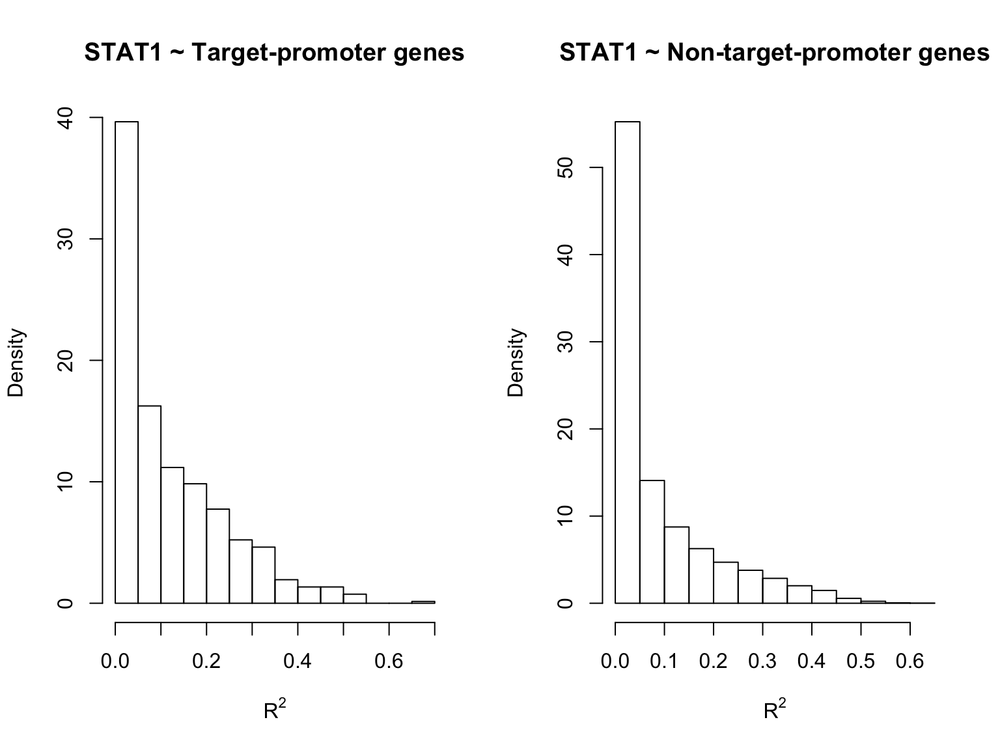
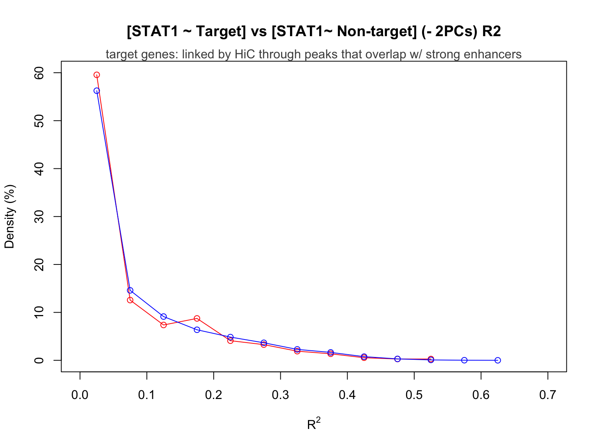
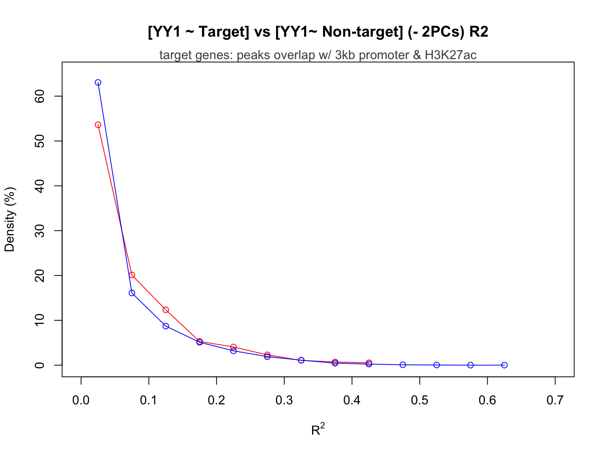

Preliminary Analysis of TF-Gene Association
Yifan Zhou
Load data
We choose whole blood as the tissue of interest for preliminary analysis.
Load tissue-specific (whole blood) gene expression tpm data extracted from GTEx v7 GTEx_Analysis_2016-01-15_v7_RNASeQCv1.1.8_gene_tpm.gct, and do normalization:
load('~/Downloads/Research/GTEx/blood_gene_exp_norm.Rdata')Load data from results of ‘tissue-specific circuits’ paper (blood_adult.txt from one of the 394 individual networks they generated, downloaded from http://regulatorycircuits.org/download.html):
blood_TF_gene <- read.delim(file = '~/Downloads/Research/GTEx/blood_adult_TF_gene.txt',
sep = '\t', header = FALSE, stringsAsFactors = FALSE) GTEx expression data overview
sum_gene <- rowSums(blood_gene_exp_norm[,-1])
names(sum_gene) <- blood_gene_exp_norm$Description
summary(sum_gene) Min. 1st Qu. Median Mean 3rd Qu. Max.
0.00e+00 0.00e+00 1.00e-05 7.24e-03 3.20e-04 1.08e+02 hist(log10(sum_gene))
The distribution of gene expression is roughly log-normal. A few genes have extremely high expression rate.
Top 30 expressed genes in blood tissue type:
top30 <- sum_gene[which(log10(sum_gene)>0)]
top30 CSF3R S100A11 S100A9 S100A12 S100A8 HLA-A
1.089221 1.779593 15.250304 1.291707 1.756228 1.347485
HLA-E HLA-C HLA-B ACTB SRGN IFITM2
1.220447 2.301403 3.677534 2.282394 1.193987 3.272747
HBB HBD FTH1 B2M HBA2 HBA1
107.958238 6.987105 1.650927 1.205410 36.407871 7.295904
FTL TMSB4X MT-RNR2 MT-ND1 MT-ND2 MT-CO1
5.729424 1.153190 2.004031 1.292850 1.070329 1.945645
MT-CO2 MT-ATP8 MT-ATP6 MT-CO3 MT-ND4 MT-CYB
2.490420 1.184855 2.185321 2.039552 2.064072 1.184578 LY75 and its associated TFs
LY75 is a gene that encodes DEC-205 (also known as CD205), a cell surface receptor that is highly expressed on dendritic cells and is involved in the endocytosis of extracellular antigens and their presentation on MHC class I molecules. We choose LY75 as a target gene of interest to analyze the association of LY75 expression level with the expression levels of putative TFs linked to LY75:
We first identify a list of putative TFs that are linked to LY75 according to results from the paper:
LY75 <- blood_TF_gene[which(blood_TF_gene[,2]=='LY75'),]
LY75 <- LY75[order(LY75[,3],decreasing = TRUE),]
LY75_TF_names<- LY75[,1]
t(LY75_TF_names) [,1] [,2] [,3] [,4] [,5] [,6] [,7] [,8]
[1,] "SP1" "HF1H3B" "TFAP2A" "HIF1A" "CREB1" "AHR" "ARNT" "ZNF75A"
[,9] [,10] [,11] [,12] [,13] [,14] [,15] [,16]
[1,] "TFAP2C" "ETV6" "HOXD12" "HOXC10" "HOXC11" "HOXB9" "ESRRA" "HOXA10"
[,17] [,18] [,19] [,20] [,21] [,22] [,23] [,24] [,25]
[1,] "RXRG" "VENTX" "HMGA1" "RXRA" "RORA" "ESRRB" "ESRRG" "NR5A2" "MYEF2"
[,26] [,27] [,28]
[1,] "NR5A1" "CDX" "IRF"for (i in LY75_TF_names){
print(blood_gene_exp_norm$Description[startsWith(blood_gene_exp_norm$Description, as.character(i))] )
}[1] "SP110" "SP140" "SP140L" "SP100" "SP1"
character(0)
[1] "TFAP2A" "TFAP2A-AS1"
[1] "HIF1AN" "HIF1A-AS1" "HIF1A" "HIF1A-AS2" "HIF1AP1"
[1] "CREB1"
[1] "AHRR" "AHR"
[1] "ARNT" "ARNTL" "ARNTL2" "ARNT2"
[1] "ZNF75A"
[1] "TFAP2C"
[1] "ETV6"
[1] "HOXD12"
[1] "HOXC10"
[1] "HOXC11"
[1] "HOXB9"
[1] "ESRRA" "ESRRAP1" "ESRRAP2"
[1] "HOXA10"
[1] "RXRG"
[1] "VENTXP7" "VENTXP4" "VENTXP5" "VENTXP6" "VENTX" "VENTXP2" "VENTXP1"
[1] "HMGA1P8" "HMGA1P2" "HMGA1" "HMGA1P7" "HMGA1P4" "HMGA1P5" "HMGA1P3"
[8] "HMGA1P6" "HMGA1P1"
[1] "RXRA"
[1] "RORA"
[1] "ESRRB"
[1] "ESRRG"
[1] "NR5A2"
[1] "MYEF2"
[1] "NR5A1"
[1] "CDX1" "CDX2" "CDX4"
[1] "IRF6" "IRF2BP2" "IRF2" "IRF1" "IRF4" "IRF5" "IRF5P1"
[8] "IRF7" "IRF9" "IRF2BPL" "IRF8" "IRF2BP1" "IRF3" We leave aside 3 TF genes, HF1H3B, CDX, and IRF, which cannot be exactly found in GTEx.
We then extract expression data of LY75 and the rest 25 TFs that are available in GTEx:
LY75_TF_names <- LY75_TF_names[-c(2,27,28)]
n = 25
LY75_TF_exp <- data.frame(matrix(nrow = 407, ncol = n))
for (i in c(1:n)){
LY75_TF_exp[,i] <- t(blood_gene_exp_norm[which(blood_gene_exp_norm$Description
==as.character(LY75_TF_names[i])),-1])
}
LY75_exp <- t(blood_gene_exp_norm[which(blood_gene_exp_norm$Description=='LY75'),-1])
LY75_TF_exp <- cbind(LY75_TF_exp,LY75_exp)
colnames(LY75_TF_exp) <- c(LY75_TF_names,'LY75')
row.names(LY75_TF_exp) <- colnames(blood_gene_exp_norm)[-1]Linear Regression
Multiple linear regression on all 25 TFs:
fit_all_LY75 <- lm(LY75 ~ ., data = LY75_TF_exp)
summary(fit_all_LY75)
Call:
lm(formula = LY75 ~ ., data = LY75_TF_exp)
Residuals:
Min 1Q Median 3Q Max
-8.368e-06 -1.008e-06 -1.252e-07 7.886e-07 9.383e-06
Coefficients:
Estimate Std. Error t value Pr(>|t|)
(Intercept) -3.979e-07 3.700e-07 -1.076 0.282825
SP1 1.093e-02 1.253e-02 0.872 0.383572
TFAP2A 9.303e+00 4.225e+00 2.202 0.028285 *
HIF1A 1.588e-02 2.514e-03 6.319 7.36e-10 ***
CREB1 1.665e-01 7.345e-02 2.266 0.023996 *
AHR 1.144e-01 2.166e-02 5.283 2.14e-07 ***
ARNT -4.017e-02 3.355e-02 -1.197 0.231957
ZNF75A 2.434e-01 8.445e-02 2.882 0.004178 **
TFAP2C 1.334e+00 1.837e+00 0.726 0.468255
ETV6 -8.604e-04 1.119e-02 -0.077 0.938764
HOXD12 -3.735e+01 2.190e+01 -1.706 0.088856 .
HOXC10 1.933e-01 3.704e-01 0.522 0.602053
HOXC11 2.757e+00 3.402e+00 0.810 0.418299
HOXB9 -1.245e+00 8.870e-01 -1.403 0.161332
ESRRA 7.713e-03 1.734e-02 0.445 0.656740
HOXA10 -2.933e-01 6.960e-01 -0.421 0.673716
RXRG -6.966e-01 6.026e-01 -1.156 0.248420
VENTX -4.720e-02 2.895e-02 -1.631 0.103808
HMGA1 8.296e-03 3.900e-03 2.127 0.034036 *
RXRA -2.937e-03 1.140e-02 -0.258 0.796767
RORA 1.446e-01 3.734e-02 3.872 0.000127 ***
ESRRB 2.673e+00 3.653e+00 0.732 0.464749
ESRRG -8.121e+00 1.247e+01 -0.651 0.515135
NR5A2 -1.227e+00 3.121e+00 -0.393 0.694343
MYEF2 9.293e-01 3.073e-01 3.024 0.002661 **
NR5A1 2.290e-01 5.782e-01 0.396 0.692252
---
Signif. codes: 0 '***' 0.001 '**' 0.01 '*' 0.05 '.' 0.1 ' ' 1
Residual standard error: 2.237e-06 on 381 degrees of freedom
Multiple R-squared: 0.773, Adjusted R-squared: 0.7581
F-statistic: 51.89 on 25 and 381 DF, p-value: < 2.2e-16Forward selection
Find the first significant predictor:
[1] "HIF1A"Add rest of the predictors one at a time until none of their p-values are significant (p value > 0.05):
The p-value and \(R^2\) statistic for each of the significant predictors added at each round of selection are:
stats_LY75 HIF1A ZNF75A MYEF2 AHR RORA
p-val 7.079951e-67 7.276625e-45 7.074830e-07 8.710178e-09 0.0002697819
R-squared 5.218495e-01 7.069205e-01 7.242927e-01 7.461165e-01 0.7543903294
CREB1 TFAP2A
p-val 0.006952932 0.01789507
R-squared 0.758828547 0.76219776Summary of the selected model:
summary(forward_model_LY75)
Call:
lm(formula = LY75 ~ HIF1A + ZNF75A + MYEF2 + AHR + RORA + CREB1 +
TFAP2A, data = df)
Residuals:
Min 1Q Median 3Q Max
-9.051e-06 -1.039e-06 -1.720e-07 8.557e-07 9.755e-06
Coefficients:
Estimate Std. Error t value Pr(>|t|)
(Intercept) -3.237e-07 2.275e-07 -1.423 0.155465
HIF1A 1.600e-02 1.761e-03 9.085 < 2e-16 ***
ZNF75A 2.890e-01 7.233e-02 3.996 7.69e-05 ***
MYEF2 1.035e+00 2.768e-01 3.740 0.000211 ***
AHR 1.019e-01 1.692e-02 6.025 3.84e-09 ***
RORA 1.444e-01 3.045e-02 4.742 2.96e-06 ***
CREB1 1.233e-01 4.466e-02 2.760 0.006046 **
TFAP2A 8.982e+00 3.778e+00 2.378 0.017895 *
---
Signif. codes: 0 '***' 0.001 '**' 0.01 '*' 0.05 '.' 0.1 ' ' 1
Residual standard error: 2.237e-06 on 399 degrees of freedom
Multiple R-squared: 0.7622, Adjusted R-squared: 0.758
F-statistic: 182.7 on 7 and 399 DF, p-value: < 2.2e-16Plot the increase of \(R^2\) with the adding of predictors:
plot(as.matrix(stats_LY75)[2,], pch=16, xlab="Number of Predictors",ylab = "R_2")
Normality check and Boxcoc transformation
Check the normality assumption:
par(mfrow=c(1,2))
hist(fit_all_LY75$residuals)
qqnorm(fit_all_LY75$residuals,pch=16)
qqline(fit_all_LY75$residuals,col='red')The distridution of residuals is heavily long-tailed.
We try to do Boxcox transformation on the response variable to restore the normality:
library(MASS)
bc <- boxcox(fit_all_LY75, plot=T, lambda=seq(-0.5,1,by=0.1))
\(\lambda\) that maximizes the profile log-likelihood is:
bc$x[which(bc$y == max(bc$y))][1] 0.3939394lambda=0.4
LY75_TF_exp_bc <- LY75_TF_exp
LY75_TF_exp_bc[,n+1] <- (LY75_TF_exp[,n+1]^lambda-1)/lambda
fit_bc_LY75 <- lm(LY75 ~., data=LY75_TF_exp_bc)
par(mfrow=c(1,2))
hist(fit_bc_LY75$residuals)
qqnorm(fit_bc_LY75$residuals,pch=16)
qqline(fit_bc_LY75$residuals,col='red')
Negative Controls
We randomly select 7 genes available in GTEx and regress LY75 expression onto their expression levels to see if \(R^2\) is as big as our previous model in which the predictors are the 7 selected TFs.
p = 7
r = 1000
R_sq_LY75 = rep(0,r)
LY75_TF_control <- data.frame(matrix(nrow = 407, ncol = p))
LY75_TF_control <- cbind(LY75_TF_control,t(LY75_exp))
colnames(LY75_TF_control)[p+1] <- 'LY75'
rand_LY75 = matrix(nrow = r, ncol = p)
for (k in c(1:r)){
rand_LY75[k,] <- sample(c(1:56202),p,replace = FALSE)
rand_LY75_name <- blood_gene_exp_norm$Description[rand_LY75[k,]]
temp <- rand_LY75_name[duplicated(rand_LY75_name)]
while (length(temp)>0){
rand_LY75[k,] <- sample(c(1:56202),p,replace = FALSE)
rand_LY75_name <- blood_gene_exp_norm$Description[rand_LY75[k,]]
temp <- rand_LY75_name[duplicated(rand_LY75_name)]
}
colnames(LY75_TF_control)[1:p] <- rand_LY75_name
for (i in c(1:p)){
LY75_TF_control[,i] <- t(blood_gene_exp_norm[rand_LY75[k,i],-1])
}
fit_control_LY75 <- summary(lm(LY75 ~. , data = LY75_TF_control))
R_sq_LY75[k] = fit_control_LY75$r.squared
}\(R^2\)s from the control models:
hist(R_sq_LY75, main = 'Distribution of R_sq of Control Models')
summary(R_sq_LY75) Min. 1st Qu. Median Mean 3rd Qu. Max.
0.0000 0.4999 0.5000 0.4990 0.5001 0.5002